pacman::p_load(tidyverse,
afex,
cowplot,
emmeans)40 Within Subjects / Repeated Measures ANOVA
40.1 Within-Subject v. Between Subjects
Up until now we have considered ANOVA in between subjects designs; when data at each level of each factor is from a different group of participants. This week we more onto within-subjects designs. As we mentioned in class we have a within-subject design whenever data from the same participants exists on at least two levels of a factor (or analogously occupied at least two cells within our interaction matrix).
To contrast some important distinctions let’s revisit our familiar data set contrasting test outcomes for students as a function of Lecture. I realize before, Lecture was crossed with at least one other factor, but for the sake on simplicity let’s just consider data from this single factor. The goal of this first section is to contrast results as a function whether this data is considered within-subjects or between-subjects.
This walkthough assumes you have the following packages:
Okay, not let’s load in some data:
within_between <- read_csv("https://raw.githubusercontent.com/tehrandavis/graduate_statistics/main/practice_datasets/within_between.csv")Rows: 36 Columns: 4
── Column specification ────────────────────────────────────────────────────────
Delimiter: ","
chr (1): Lecture
dbl (3): BetweenSubjects_ID, WithinSubjects_ID, Score
ℹ Use `spec()` to retrieve the full column specification for this data.
ℹ Specify the column types or set `show_col_types = FALSE` to quiet this message.within_between# A tibble: 36 × 4
BetweenSubjects_ID WithinSubjects_ID Lecture Score
<dbl> <dbl> <chr> <dbl>
1 1 1 Physical 53
2 2 2 Physical 49
3 3 3 Physical 47
4 4 4 Physical 42
5 5 5 Physical 51
6 6 6 Physical 34
7 7 7 Physical 44
8 8 8 Physical 48
9 9 9 Physical 35
10 10 10 Physical 18
# ℹ 26 more rows40.1.1 Within v Between ANOVA
So we have our dataset within_between. You’ll note that there are two subjects columns WithinSubjects which imagines 12 participants each going through all 3 Lecture types and BetweenSubjects where each participant (N=36) is assigned to a single Lecture type. Previously, we might have treated this as a between subjects design. Looking at the ezDesign of this design we see that every BetweenSubject is assigned to a single condition (as evidenced by count = 1)
ez::ezDesign(within_between,y=Lecture,x=BetweenSubjects_ID)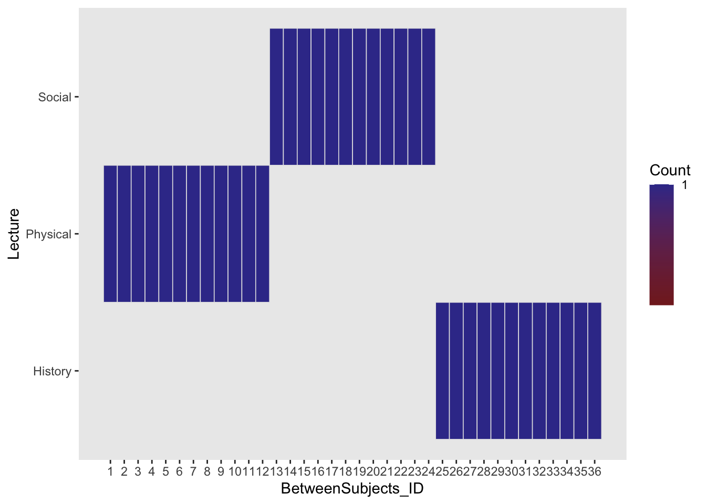
Skipping past the preliminaries (e.g., testing for assumptions) and straight to running the BS ANOVA:
between_aov <- lm(Score~Lecture, data = within_between)
sjstats::anova_stats(between_aov)[1:8]term | df | sumsq | meansq | statistic | p.value | etasq | partial.etasq
------------------------------------------------------------------------------
Lecture | 2 | 1194 | 597.000 | 4.284 | 0.022 | 0.206 | 0.206
Residuals | 33 | 4599 | 139.364 | | | | However, let’s assume instead that this data set comes a within design. That is, instead of different participants in each Lecture group, the same group of people went through all three lectures:
ez::ezDesign(within_between,y=Lecture,x=WithinSubjects_ID)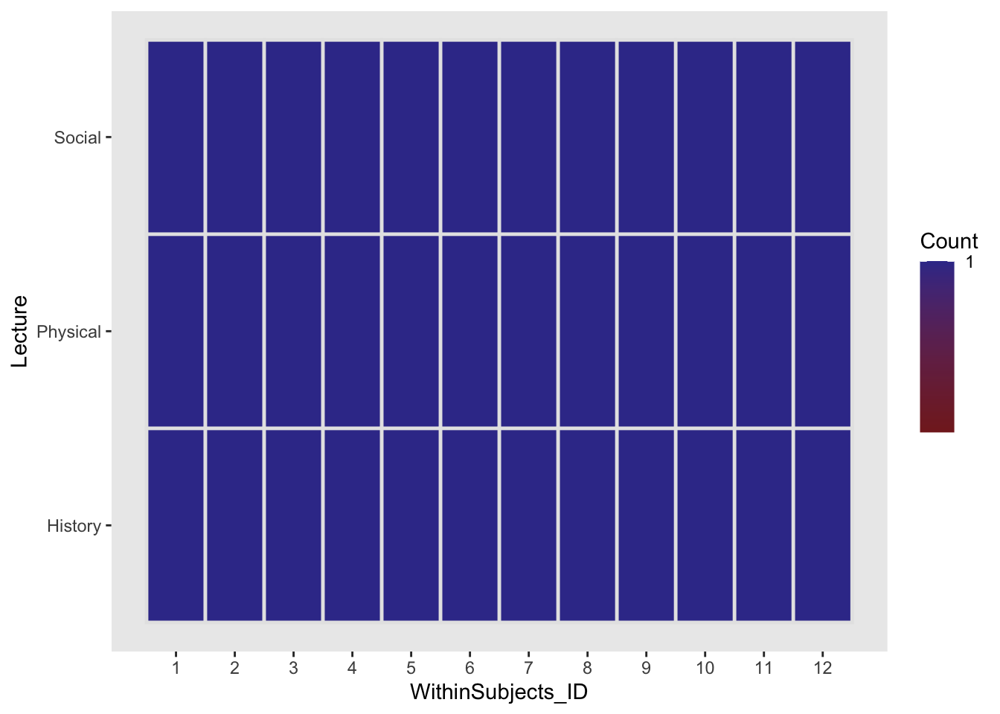
We see that the ezDesign has changed. Instead of 36 participants each individually assigned to a single condition, we have 12 participants each assigned to all three conditions for a single trial (measure). As mentioned in class, conceptually, a within subjects design considers participant as a pseudo factor with each individual participant as a level. To fully capture this we should factorize our WithinSubjects_ID column.
Running the within-subjects ANOVA:
term | df | sumsq | meansq | statistic | p.value | etasq | partial.etasq
-------------------------------------------------------------------------------------------------
Lecture | 2 | 1194.000 | 597.000 | 12.305 | < .001 | 0.206 | 0.528
factor(WithinSubjects_ID) | 11 | 3531.667 | 321.061 | 6.618 | < .001 | 0.610 | 0.768
Residuals | 22 | 1067.333 | 48.515 | | | | Before continuing on, I want you to take a moment and think about what the specification of the formula in the lm() model above actually means. Not only are we using Lecture as a predictor, but we are also treating participant WithinSubjects_ID as a factor as well. That is not only is the model accounting for the variation moving between levels of Lecture, but also the model is accounting for variability moving between each participant. If you want to continue to use the lm() method for model building, you will need to include participant as a factor in the model. However, I would not recommend continuing with lm(), especially as you end up with more complex within-subjects designs. In your future, you will probably elect to run either a mixed effects model using lmer or a repeated measures ANOVA. Mixed effect modeling is outside of the scope of what we cover this semester (although we’ve laid some foundations for it). As for repeated measures ANOVA, I would recommend moving onto a new method for running this in R. In the previous walkthrough I introduced aov_ez() from the afex library.
This might be a good time to start running ANOVA using afex::aov_ez(). Let’s re-run both of our models using afex::ez():
between_aov <- afex::aov_ez(id = "BetweenSubjects_ID", # 36 people in 3 groups
dv = "Score",
data = within_between,
between = "Lecture", # Lecture as between predictor
within = NULL,
type = 3,
return = "afex_aov",
anova_table=list(es = "pes") # partial eta sq.
)Converting to factor: LectureContrasts set to contr.sum for the following variables: Lecture40.1.2 Comparing BS v WS ANOVA
Okay, returning to our model outcomes. Keep in mind in both cases we are using the exact same scores.
Here is our between ANOVA:
between_aovAnova Table (Type 3 tests)
Response: Score
Effect df MSE F pes p.value
1 Lecture 2, 33 139.36 4.28 * .206 .022
---
Signif. codes: 0 '***' 0.001 '**' 0.01 '*' 0.05 '+' 0.1 ' ' 1And here is our within ANOVA
within_aovAnova Table (Type 3 tests)
Response: Score
Effect df MSE F pes p.value
1 Lecture 1.26, 13.88 76.88 12.31 ** .528 .002
---
Signif. codes: 0 '***' 0.001 '**' 0.01 '*' 0.05 '+' 0.1 ' ' 1
Sphericity correction method: GG In both of these cases the data is exactly the same. What has changed is how we parse the variance (you’ll notice that the denominator degrees of freedom are different for the second ANOVA). In a within design, we need to take into account the “within-subject” variance. That is how individual subjects vary from one level of treatment to the other. In this respect, within designs are typically more powerful than analogous between designs. While the inherent differences between individual subjects is present in both types of designs, your within-subjects ANOVA model includes it in its analysis. In the present example, this increase in power is reflected by the lower MSE (48.52 v. 139.36) and subsequently, larger F-value (12.31 v. 4.28) and effect size (0.53 v. 0.21) in our within-subjects analysis.
Well if that’s the case why not run within-subject (WS) designs all of the time. Well, typically psychologists do when the subject lends itself to WS-designs. BUT there are certainly times when they are not practical, for example, if you are concerned about learning, practice, or carryover effects where exposure to a treatment on one level might impact the other levels—if you were studying radiation poisoning and had a placebo v. radiation dose condition, it be likely that you wouldn’t run your experiment as a within—or at the very least you wouldn’t give them the radiation first. It would also be likely that you’d be in violation several standards of ethics.
(You may also note that a correction is taking place on within_aov giving us those odd degrees of freedom. We’ll talk more about that in a bit.)
40.2 a note on Univariate v. Multivariate methods
Univariate v. multivariate statistical methods refer to the number of dependent variables associated with the model per fundamental unit of analysis. In psychology research the fundamental unit of analysis is typically the participant—measures are taken at the level of the participant. A univariate model has one dependent variable whereas a multivariate method has two or more per participant. Perhaps some of you are more familiar with this distinction in the context on One-way MANOVA… which analyzes two or more dependent variables simultaneously in an ANOVA design. MANOVA (multivariate ANOVA) is preferred to running seperate univariate ANOVAs if one believes that the dependent variables involved are somehow correlated with one another. In this case MANOVA factors these correlations into the model testing the IVs.
I bring all of this up as one way to conceptualize repeated-measures ANOVA is as multivariate method. Multiple measures are taken at the level of the participant. This will factor into our discussion of follow-up analyses.
40.3 a note on sphericity for Repeated measures ANOVA
In addition to the assumptions that we are familiar with, repeated-measures ANOVA has the additional assumption of Spherecity of Variance / Co-variance. We talked at length in class re: Spherecity of Variance / Co-variance so I suggest revisiting the slides for our example. At the same time there are debates as to the importance of sphericity in the subjects data. One alternative method that avoids these issues is to invoke mixed models (e.g., lmer). However, if you really want to go down the rabbit hole check out Doug Bates reponse on appropriate dfs and p-values in lmer. You’ll note that these discussions were ten years ago and are still being debated (see here. That said, you may be seeing mixed models in your near future (i.e., next semester)
For now, we won’t go down the rabbit hole and just focus on the practical issues confronted when running a repeated-measures ANOVA.
40.4 EXAMPLE 1
To start, we will use data related to the effectiveness of relaxation therapy to the number of episodes that chronic migraine sufferers reported. Data was collected from each subject over the course of 5 weeks. After week 2 the therapy treatment was implemented effectively dividing the 5 weeks into two phases, Pre (Weeks 1 & 2) and Post (Weeks 3,4, & 5).
40.4.1 loading in the data:
example1 <- read_delim("https://www.uvm.edu/~statdhtx/methods8/DataFiles/Tab14-3.dat",
delim = "\t")Rows: 9 Columns: 6
── Column specification ────────────────────────────────────────────────────────
Delimiter: "\t"
dbl (6): Subject, Wk1, Wk2, Wk3, Wk4, Wk5
ℹ Use `spec()` to retrieve the full column specification for this data.
ℹ Specify the column types or set `show_col_types = FALSE` to quiet this message.example1# A tibble: 9 × 6
Subject Wk1 Wk2 Wk3 Wk4 Wk5
<dbl> <dbl> <dbl> <dbl> <dbl> <dbl>
1 1 21 22 8 6 6
2 2 20 19 10 4 4
3 3 17 15 5 4 5
4 4 25 30 13 12 17
5 5 30 27 13 8 6
6 6 19 27 8 7 4
7 7 26 16 5 2 5
8 8 17 18 8 1 5
9 9 26 24 14 8 9You’ll notice that the data set above is in wide format. Each subject is on a single row and each week is in its own column. Note that this is the preferred format for within subjects analysis for SPSS. However in R we want it in long format.
example1_long <- pivot_longer(example1,
cols = -Subject,
names_to = "Week",
values_to = "Migraines")
example1_long$Week <- as.factor(example1_long$Week)
example1_long$Subject <- as.factor(example1_long$Subject)
example1_long# A tibble: 45 × 3
Subject Week Migraines
<fct> <fct> <dbl>
1 1 Wk1 21
2 1 Wk2 22
3 1 Wk3 8
4 1 Wk4 6
5 1 Wk5 6
6 2 Wk1 20
7 2 Wk2 19
8 2 Wk3 10
9 2 Wk4 4
10 2 Wk5 4
# ℹ 35 more rowsOk, much better, each Subject × Week observation is on a single row.
40.4.2 plotting the data
In addition to plotting your means, one crucial step is to plot the changes in the within-subject (repeated measures) variable at the participant-level. This is especially useful for discerning whether the pattern of results is roughly similar for all participants -OR- if, instead there is large individual variability in the direction of the effect. In other words, “is your manipulation having roughly the same effect for every participant OR is the effect drastically different for participants.
There are 2 ways to do this: 1. the Facet plot or 2. Spaghetti Plot.
40.4.3 the Facet plot
Each window / facet is for a single subject (S1-S9):
ggplot(data = example1_long, aes(x=Week, y=Migraines, group = 1)) +
geom_point() +
geom_line() +
facet_wrap(~Subject, ncol = 3)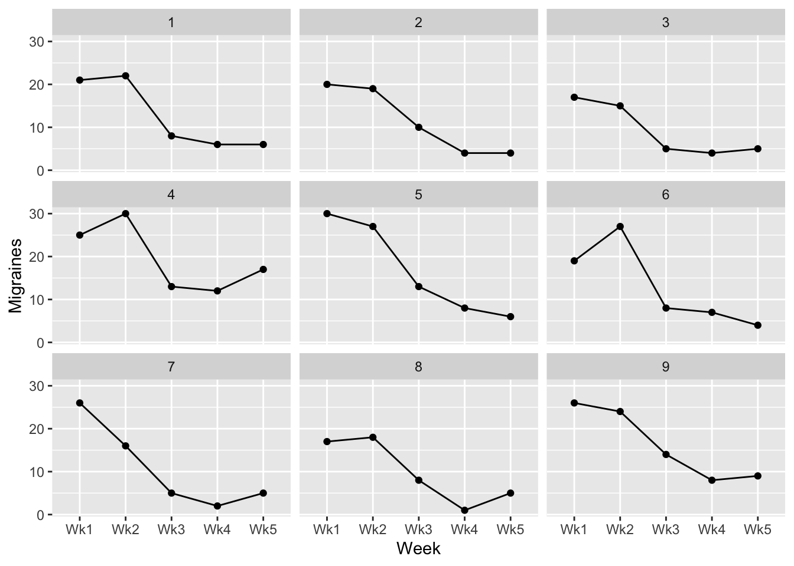
40.4.4 the Spaghetti Plot
In this case each line represents an individual Subject (1-9):
ggplot(data = example1_long, aes(x=Week, y=Migraines, group = Subject)) +
geom_point(aes(col=Subject)) +
geom_line(aes(col=Subject))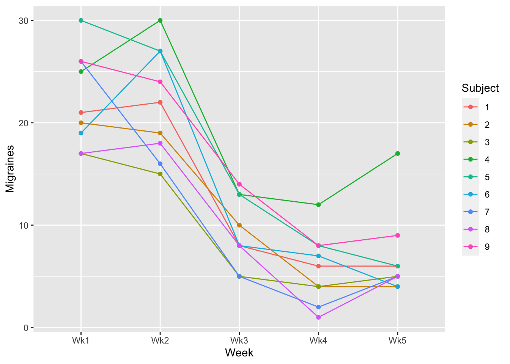
Which you choose is ultimately up to you. I tend to use Spaghetti plots unless I have instances where I have a high number of participants. This can potentially make the spaghetti plot busy (a bunch of points and line). That said, the purpose of the Spaghetti Plot is to note inconsistencies in trends. A helpful tool for a potentially busy Spaghetti Plot is to use plotly. This produces an interactive plot where you can use the mouse cursor to identify important information:
Attaching package: 'plotly'The following object is masked from 'package:ggplot2':
last_plotThe following object is masked from 'package:stats':
filterThe following object is masked from 'package:graphics':
layouts_plot <- ggplot(data = example1_long, aes(x=Week, y=Migraines, group = Subject)) +
geom_point(aes(col=Subject)) +
geom_line(aes(col=Subject))
plotly::ggplotly(s_plot)Try hovering over individual points and lines in the plot above. Also, see what happens when you click on one of the participant numbers in the legend.
40.4.5 Means Plots
One additional concern that we must deal with when plotting within-subjects data is the error bars. Plotting the standard error or regular confidence intervals may be misleading for making statistical inferences. This is because the values when normally calculated do not account for within subject correlation. Luckily for us there is a correction that we can make using the Rmisc package. Please see Cousineau (2005) and Morey (2008) for details on this issue and subsequent correction.
The practical steps for this correction includes first norming the data to account for within subjects correlations.
normedData <- Rmisc::normDataWithin(data = example1_long,
measurevar = "Migraines",
idvar = "Subject",
betweenvars = NULL)
normedData Subject Week Migraines MigrainesNormed
1 1 Wk1 21 21.644444
2 1 Wk2 22 22.644444
3 1 Wk3 8 8.644444
4 1 Wk4 6 6.644444
5 1 Wk5 6 6.644444
6 2 Wk1 20 21.844444
7 2 Wk2 19 20.844444
8 2 Wk3 10 11.844444
9 2 Wk4 4 5.844444
10 2 Wk5 4 5.844444
11 3 Wk1 17 21.044444
12 3 Wk2 15 19.044444
13 3 Wk3 5 9.044444
14 3 Wk4 4 8.044444
15 3 Wk5 5 9.044444
16 4 Wk1 25 18.844444
17 4 Wk2 30 23.844444
18 4 Wk3 13 6.844444
19 4 Wk4 12 5.844444
20 4 Wk5 17 10.844444
21 5 Wk1 30 26.444444
22 5 Wk2 27 23.444444
23 5 Wk3 13 9.444444
24 5 Wk4 8 4.444444
25 5 Wk5 6 2.444444
26 6 Wk1 19 19.244444
27 6 Wk2 27 27.244444
28 6 Wk3 8 8.244444
29 6 Wk4 7 7.244444
30 6 Wk5 4 4.244444
31 7 Wk1 26 28.444444
32 7 Wk2 16 18.444444
33 7 Wk3 5 7.444444
34 7 Wk4 2 4.444444
35 7 Wk5 5 7.444444
36 8 Wk1 17 20.444444
37 8 Wk2 18 21.444444
38 8 Wk3 8 11.444444
39 8 Wk4 1 4.444444
40 8 Wk5 5 8.444444
41 9 Wk1 26 23.044444
42 9 Wk2 24 21.044444
43 9 Wk3 14 11.044444
44 9 Wk4 8 5.044444
45 9 Wk5 9 6.044444We then calculate the se, sd, and ci values of our normed data, in this case MigrainesNormed.
The final step is to make a correction on these Normed values (Morey (2008)). This is done by taking the number of levels of the within factor (nWithinGroups) and applying the following correction:
The range of our corrected errorbars are the sd, se, ci multiplied by this correctionFactor.
For example, the sd of participants’ Migraines in Wk1 is:
sd(normedData$MigrainesNormed[normedData$Week=="Wk1"])*correctionFactor[1] 3.588369Fortunately there is a function in Rmisc that handles this correction for us, summarySEwithin. It is very similar to the summarySE function you are familiar with, but asks you to specify which IVs are within-subjects (withinvars), between-subjects(betweenvars) and which column contains subject IDs idvar. Using our original example1_long data:
Rmisc::summarySEwithin(data=example1_long,
measurevar = "Migraines",
withinvars = "Week",
betweenvars = NULL,
idvar = "Subject") Week N Migraines sd se ci
1 Wk1 9 22.333333 3.588369 1.1961229 2.758264
2 Wk2 9 22.000000 2.993280 0.9977598 2.300838
3 Wk3 9 9.333333 1.984663 0.6615545 1.525547
4 Wk4 9 5.777778 1.474788 0.4915960 1.133623
5 Wk5 9 6.777778 2.837252 0.9457507 2.180905Unfortunately, to date I haven’t found a way to get this to play nice with stat_summary() in ggplot(). HOWEVER, there is a simple work around. Since stat_summary() is simply summarizing our means and error values from the dataset and summarySEwithin is doing the exact same thing, we can simply pull these values straight from summarySEwithin with one MAJOR caveat. summarySEwithin reports the normed means and errors, however we need the original means. Note that this is not an issue when you are only dealing with within subjects factors, but if you are performing mixed ANOVA (combination within-subjects and between-subjects) these means can differ.
To address this problem user Hause Lin created a custom function summarySEwithin2 that reports both normed and unnormed means. You can find this script on their Github site here. I would recommend copying and pasting the code you your own “.R” file for future use. In the meantime we can directly source this code from their site:
source("https://gist.githubusercontent.com/hauselin/a83b6d2f05b0c90c0428017455f73744/raw/38e03ea4bf658d913cf11f4f1c18a1c328265a71/summarySEwithin2.R")A similar script may be found on this ggplot tutorial site, which forms the basis of this alternative plotting method.
Note that this “alternative” is how I in fact create most of my own ANOVA plots. But, I have my own custom function that is an adaptation of summarySEwithin2, I call it withinSummary. This is to address the fact that when writing your data up you need to use not only the actual means but also the actual se / sd / ci.
source("https://raw.githubusercontent.com/tehrandavis/graduate_statistics/main/custom_functions/withinSummary.R")This gives me both the $Actual and $Corrected values. I can use the descriptiveStats$Corrected data for plotting, for example: First we save the output of withinSummary to an object:
descriptiveStats <- withinSummary(data=example1_long,
measurevar = "Migraines",
withinvars = "Week",
idvar = "Subject")
Attaching package: 'data.table'The following objects are masked from 'package:lubridate':
hour, isoweek, mday, minute, month, quarter, second, wday, week,
yday, yearThe following objects are masked from 'package:dplyr':
between, first, lastThe following object is masked from 'package:purrr':
transposedescriptiveStats$Actual
Week N Migraines sd se ci
1 Wk1 9 22.333333 4.582576 1.527525 3.522480
2 Wk2 9 22.000000 5.338539 1.779513 4.103564
3 Wk3 9 9.333333 3.391165 1.130388 2.606680
4 Wk4 9 5.777778 3.419714 1.139905 2.628625
5 Wk5 9 6.777778 4.116363 1.372121 3.164117
$Corrected
Week N Migraines MigrainesNormed sd se ci
1 Wk1 9 22.333333 22.333333 3.588369 1.1961229 2.758264
2 Wk2 9 22.000000 22.000000 2.993280 0.9977598 2.300838
3 Wk3 9 9.333333 9.333333 1.984663 0.6615545 1.525547
4 Wk4 9 5.777778 5.777778 1.474788 0.4915960 1.133623
5 Wk5 9 6.777778 6.777778 2.837252 0.9457507 2.180905From here we can refer directly to descriptiveStats in constructing the ggplot. When plotting you use the Corrected values .
And now to construct the plot. rather than using summary_stat() we directly call each geom. For example, adding the means and as points:
p <- p + geom_point(size = 2)
p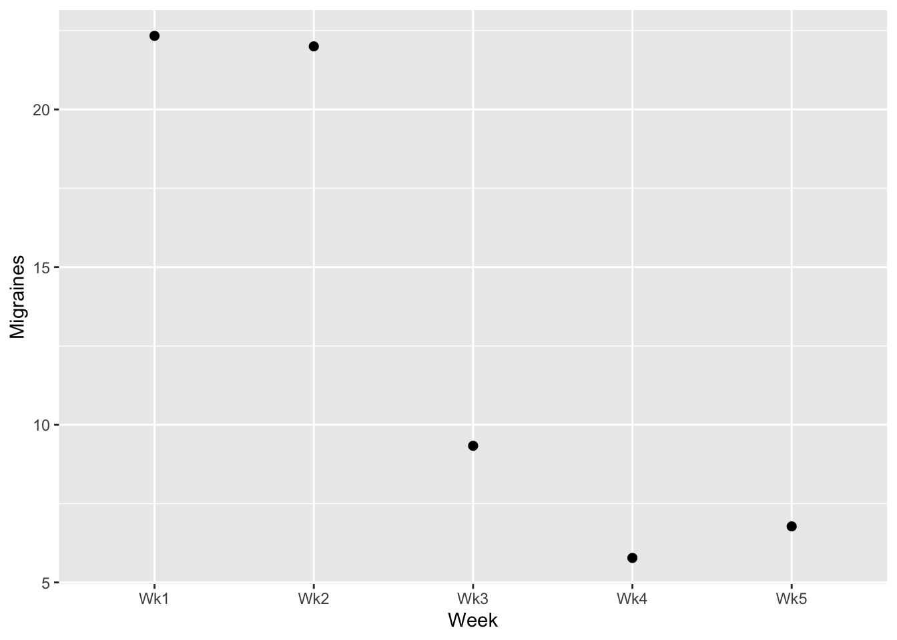
Connecting those points with lines:
p <- p + geom_line()
p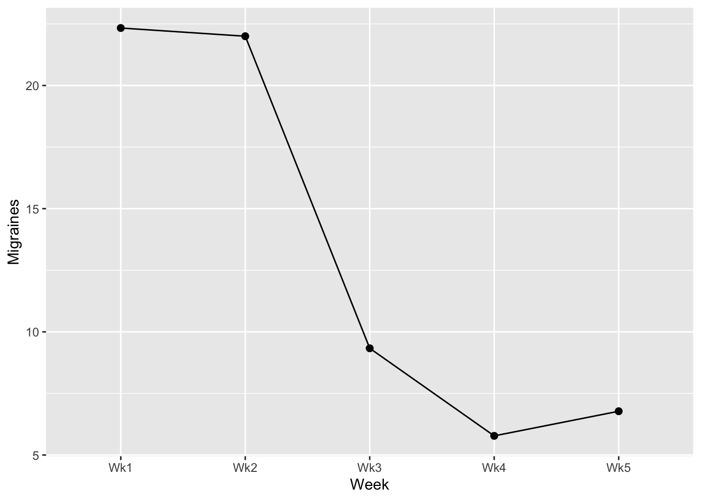
Adding error bars (SE):
p <- p + geom_errorbar(aes(ymin=Migraines-se, ymax=Migraines+se), width=0)
show(p)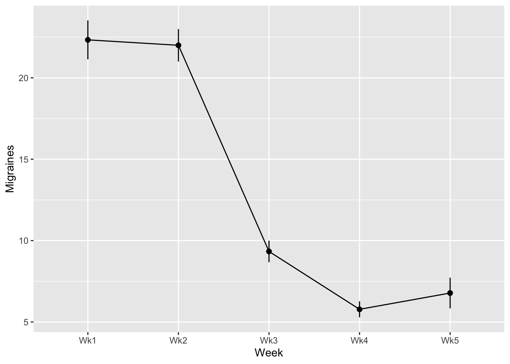
note that above I set width of the error bars to 0 to keep consistent with how we’ve been plotting pointranges. However, if you want caps, you can change the width. I recommend a width no higher than 0.2.
From here you can use your familiar commands to whip it into APA format!
40.4.6 building the model using afex:
Running a WS ANOVA is just like running a BS ANOVA in afex (see the last walkthrough). We call in our within subjects factors using the within= argument.
40.4.7 assumptions checks: normality
We can then use the model, within_aov to run the requisite assumption checks. As before, the model plays nicely with performance, but the blanket check_model will not work with afex. Instead we can do a piecemeal check for normality along with visualizations.
# visualization against histogram
within_aov %>% performance::check_normality() %>% plot()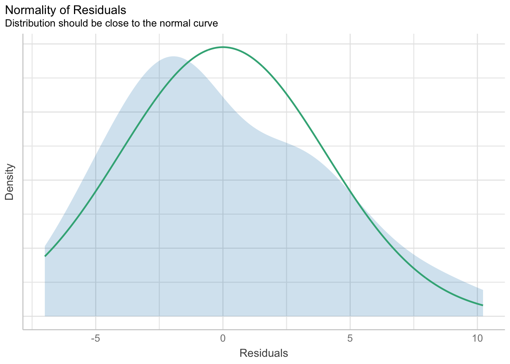
# qq visualization
within_aov %>% performance::check_normality() %>% plot("qq")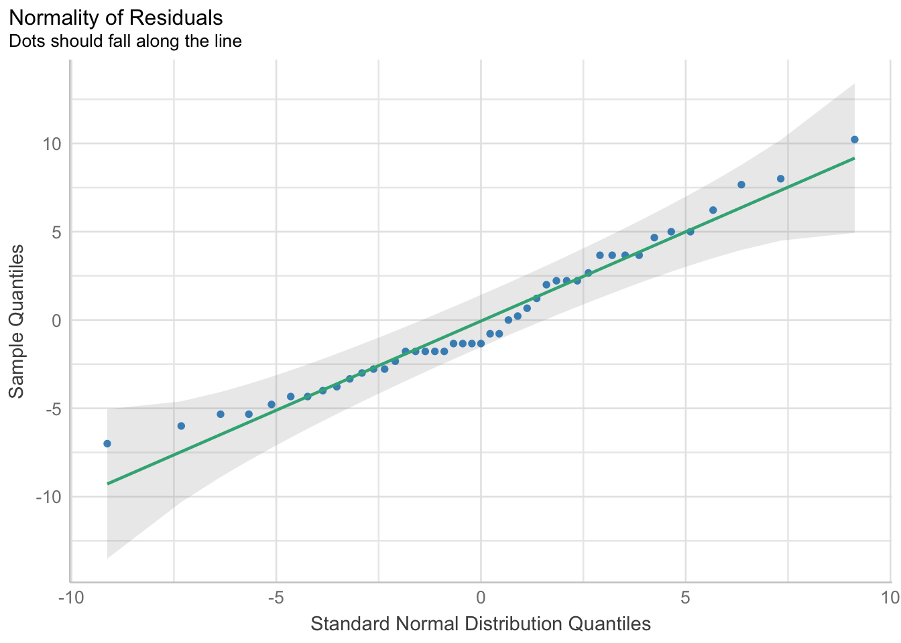
# shapiro-wilkes test
within_aov %>% performance::check_normality() %>% show()OK: residuals appear as normally distributed (p = 0.206).40.4.8 assumptions checks: sphericity
Just like the paired \(t\) test from a few weeks back, the RM-ANOVA does not have an explicit check for homogeneity of variance. Instead, RM ANOVA introduces a new test of assumptions that you must run, the test of Sphericity. Indeed, this test is run instead of the check for homogeneity. This is because technically a WS ANOVA violates the assumption of independence of scores, and thus inflates the likelihood of a homogeneity of variances violation. Essentially, we give up on trying to hold onto this assumption and instead direct our interests towards maintaining Sphericity. Importantly, if we do violate sphericity, there is a clean and relatively agreed upon step that we must take with our analysis.
There are two ways to test for sphericity, (1) simply using and adjusting based upon the summary output of our ANOVA model, or (2) we can again use the performance library. I typically just use method 1, so that’s all I will show you here to avoid confusion.
There is an argument to be made that you should always make a correction to guard against deviations from sphericity (see below). The correction becomes larger the further your data is from sphericity. However, standard practice in the psychology literature is to only apply the correction if our data fail the Mauchly’s Test (p < .05) link. The outcome of this test can be obtained by using the summary() function on our model.
summary(within_aov)Warning in summary.Anova.mlm(object$Anova, multivariate = FALSE): HF eps > 1
treated as 1
Univariate Type III Repeated-Measures ANOVA Assuming Sphericity
Sum Sq num Df Error SS den Df F value Pr(>F)
(Intercept) 7893.7 1 486.71 8 129.747 3.186e-06 ***
Week 2449.2 4 230.40 32 85.042 < 2.2e-16 ***
---
Signif. codes: 0 '***' 0.001 '**' 0.01 '*' 0.05 '.' 0.1 ' ' 1
Mauchly Tests for Sphericity
Test statistic p-value
Week 0.28236 0.53699
Greenhouse-Geisser and Huynh-Feldt Corrections
for Departure from Sphericity
GG eps Pr(>F[GG])
Week 0.68446 5.773e-12 ***
---
Signif. codes: 0 '***' 0.001 '**' 0.01 '*' 0.05 '.' 0.1 ' ' 1
HF eps Pr(>F[HF])
Week 1.075624 1.39444e-16This gives us our original ANOVA table with non-corrected degrees of freedom, the Mauchly Test, and the Greenhouse-Geisser and Huynh-Feldt corrections. The Mauchly Test is our test for Sphericity. In this case the Mauchly Test p = .54, so no corrections are necessary. If your elect to make the correction (i.e., the data fails Mauchly’s Test) then you could multiply your original degrees of freedom by the GG eps (or HF eps). The p-value next to the correction values tells you the p-value for your ANOVA effect assuming corrections. In this case even with the corrections the effect of Week is significant.
If you want to get the corrected degrees of freedom, you can simply take a look at the model itself:
within_aovAnova Table (Type 3 tests)
Response: Migraines
Effect df MSE F pes p.value
1 Week 2.74, 21.90 10.52 85.04 *** .914 <.001
---
Signif. codes: 0 '***' 0.001 '**' 0.01 '*' 0.05 '+' 0.1 ' ' 1
Sphericity correction method: GG * note that the output includes the sphericity correction: GG.
Alternatively you could just rerun the afex function and specifying the correction= call. You can either specify the “GG” correction:
## GG correction:
within_aov_gg <- afex::aov_ez(id = "Subject",
dv = "Migraines",
data = example1_long,
between = NULL,
within = "Week",
type = 3,
return = "afex_aov",
anova_table=list(es = "pes",
correction="GG"))
within_aov_ggAnova Table (Type 3 tests)
Response: Migraines
Effect df MSE F pes p.value
1 Week 2.74, 21.90 10.52 85.04 *** .914 <.001
---
Signif. codes: 0 '***' 0.001 '**' 0.01 '*' 0.05 '+' 0.1 ' ' 1
Sphericity correction method: GG or the “HF” correction:
## HF correction (note that any HF eps > 1 will be treated as 1):
within_aov_hf <- afex::aov_ez(id = "Subject",
dv = "Migraines",
data = example1_long,
between = NULL,
within = "Week",
type = 3,
return = "afex_aov",
anova_table=list(es = "pes",
correction="HF"))Warning: HF eps > 1 treated as 1within_aov_hfAnova Table (Type 3 tests)
Response: Migraines
Effect df MSE F pes p.value
1 Week 4, 32 7.20 85.04 *** .914 <.001
---
Signif. codes: 0 '***' 0.001 '**' 0.01 '*' 0.05 '+' 0.1 ' ' 1
Sphericity correction method: HF 40.4.9 running post-hoc analyses and follow-ups
Post-hoc comparisons of means take a different form for repeated measures ANOVA. Typical methods such as Tukey HSD were designed for between-subjects effects, where it makes sense (assuming homogeneity of variance) to use a pooled error term. However, for within-subjects (or repeated measures) effects, the error term is the Treatment x Subjects interaction, and the nature of the TxS interaction across all treatment levels can be very different than it is for any particular pair of treatment levels.
The typical recommendation (more detail on this in the following walkthrough) is to carry out pair-wise contrasts for a within-subjects factor using ordinary paired tests with an error term based only on the levels being compared .
Because of this, post-hoc analysis involving repeated measures requires an additional argument in emmeans(); invoking model="multivariate"
emmeans(within_aov, specs = pairwise~Week, model="multivariate")$emmeans
Week emmean SE df lower.CL upper.CL
Wk1 22.33 1.53 8 18.81 25.86
Wk2 22.00 1.78 8 17.90 26.10
Wk3 9.33 1.13 8 6.73 11.94
Wk4 5.78 1.14 8 3.15 8.41
Wk5 6.78 1.37 8 3.61 9.94
Confidence level used: 0.95
$contrasts
contrast estimate SE df t.ratio p.value
Wk1 - Wk2 0.333 1.700 8 0.196 0.9996
Wk1 - Wk3 13.000 1.247 8 10.423 <.0001
Wk1 - Wk4 16.556 1.375 8 12.036 <.0001
Wk1 - Wk5 15.556 1.608 8 9.672 0.0001
Wk2 - Wk3 12.667 1.179 8 10.748 <.0001
Wk2 - Wk4 16.222 0.909 8 17.837 <.0001
Wk2 - Wk5 15.222 1.441 8 10.562 <.0001
Wk3 - Wk4 3.556 0.818 8 4.345 0.0154
Wk3 - Wk5 2.556 1.156 8 2.211 0.2663
Wk4 - Wk5 -1.000 0.882 8 -1.134 0.7857
P value adjustment: tukey method for comparing a family of 5 estimates Note that the df (df = 8) of these tests are NOT the error df (df = 22) from the omnibus ANOVA.
40.4.10 Example 1 write up
# adding to the plot we created above
p + theme_cowplot()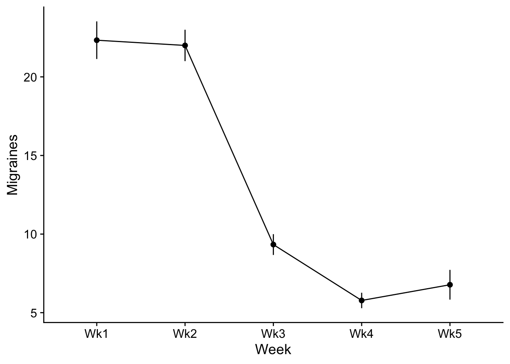
Figure 1. Number of migraines as a function of Week. Note that Weeks 1 and 2 are baseline while Weeks 3, 4, and 5 are post relaxation therapy treatment.
To test whether relaxation therapy had a positive effect for migraine suffers, we analyzed the number of migraines each individual reported over a 5 week period. The first two weeks were used as a baseline to establish a typical week for each person. The remaining three weeks each person was lead through relaxation therapy techniques. These data were submitted to a within-subjects ANOVA with Week as a factor.
Post hoc comparisions demonstrated the effectiveness of our treatment. While the number of migraines remained indifferent during the first two weeks (TukeyHSD, p >.05) there was a significant decrease in the number of migraines post treatment. As seen in Figure 1, the number of migraines in Weeks 3, 4, 5 we significantly lower than Weeks 1 and 2 (ps < .05).
** note that you don’t have to worry about the sphericity violation as it relates to the post hoc analyses—as you are only comparing two levels.
40.5 EXAMPLE 2
Let’s take a look at another example, using a experimental paradigm we are familiar with, scores as a function of lecture type.
40.5.1 loading in the data
You note that this data is already in long format so no need to adjust.
example2_long <- read_csv("https://raw.githubusercontent.com/tehrandavis/graduate_statistics/main/practice_datasets/withinEx2.csv")Rows: 36 Columns: 3
── Column specification ────────────────────────────────────────────────────────
Delimiter: ","
chr (1): Lecture
dbl (2): Subject, Score
ℹ Use `spec()` to retrieve the full column specification for this data.
ℹ Specify the column types or set `show_col_types = FALSE` to quiet this message.example2_long# A tibble: 36 × 3
Subject Lecture Score
<dbl> <chr> <dbl>
1 1 Physical 53
2 2 Physical 49
3 3 Physical 47
4 4 Physical 42
5 5 Physical 51
6 6 Physical 34
7 7 Physical 44
8 8 Physical 48
9 9 Physical 35
10 10 Physical 18
# ℹ 26 more rows40.5.2 plotting the data
Let’s plot this data. Below, I put together the code for the means plot. But why don’t you try to create a Spaghetti plot.
This time for the means plot I’ll make my points a little larger, lines a little thicker, and add caps to the error bars:
descriptiveStats <- withinSummary(data=example2_long,measurevar = "Score",withinvars = "Lecture",idvar = "Subject")Automatically converting the following non-factors to factors: Lecturep <- ggplot(descriptiveStats$Corrected,mapping = aes(x = Lecture,y = Score, group=1)) +
geom_point(size=3) +
geom_line(size=2) +
geom_errorbar(aes(ymin=Score-se, ymax=Score+se), width=0.15) +
theme_cowplot() +
theme(
axis.title = element_text(size = 16, face = "bold", lineheight = .55),
axis.text = element_text(size = 12),
legend.title = element_text(size = 12, face = "bold"),
legend.position = c(.25,.25)) +
scale_color_manual(values=c("black","grey50")) +
xlab("Lecture") +
ylab ("Score") +
theme(plot.margin=unit(c(.25,.25,.25,.25),"in")) +
# stack legend boxes horizontally:
theme(legend.box = "horizontal")Warning: Using `size` aesthetic for lines was deprecated in ggplot2 3.4.0.
ℹ Please use `linewidth` instead.show(p)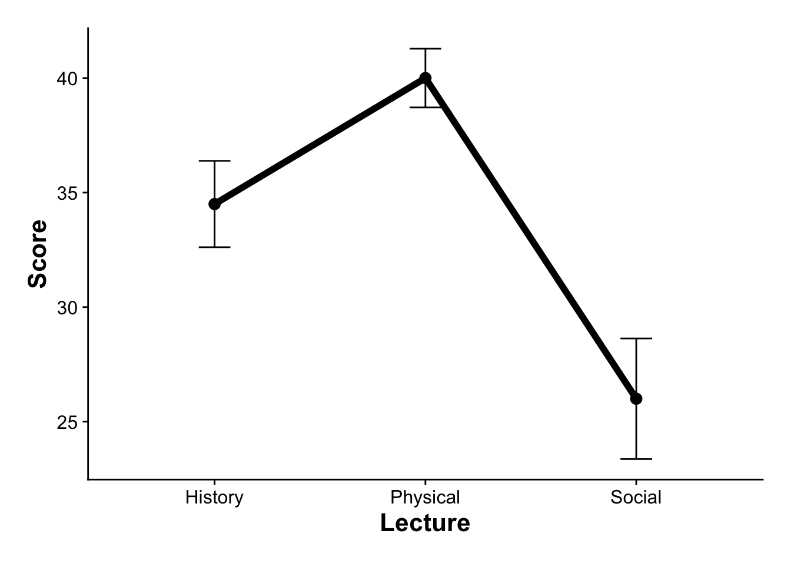
Maybe not the best plot, but wanted to show you how to tweak things.
40.5.3 running the ANOVA:
As before, let’s run this using afex:
within_aov <- afex::aov_ez(
id = "Subject",
dv = "Score",
data = example2_long,
between = NULL,
within = "Lecture",
type = 3,
return = "afex_aov",
anova_table=list(es = "pes", correction="none"))
summary(within_aov)
Univariate Type III Repeated-Measures ANOVA Assuming Sphericity
Sum Sq num Df Error SS den Df F value Pr(>F)
(Intercept) 40401 1 3531.7 11 125.836 2.319e-07 ***
Lecture 1194 2 1067.3 22 12.305 0.000259 ***
---
Signif. codes: 0 '***' 0.001 '**' 0.01 '*' 0.05 '.' 0.1 ' ' 1
Mauchly Tests for Sphericity
Test statistic p-value
Lecture 0.41524 0.012345
Greenhouse-Geisser and Huynh-Feldt Corrections
for Departure from Sphericity
GG eps Pr(>F[GG])
Lecture 0.63101 0.00225 **
---
Signif. codes: 0 '***' 0.001 '**' 0.01 '*' 0.05 '.' 0.1 ' ' 1
HF eps Pr(>F[HF])
Lecture 0.6748954 0.00173583You’ll notice that in this example the data failed the Mauchly Test for Sphericity (\(p\) = .0123). As I mentioned above in this case you’ll need to make the appropriate corrections. GG corrections are the “industry standard” (you typically see these in psych literature). HF corrections are not as conservative, and are appropriate in instances where the GG eps > 0.75. In this case we’ll use the GG correction. My advice, just rerun the ANOVA with correction="GG":
within_aov <- afex::aov_ez(
id = "Subject",
dv = "Score",
data = example2_long,
between = NULL,
within = "Lecture",
type = 3,
return = "afex_aov",
anova_table=list(es = "pes",
correction="GG",
sig_symbols = rep("", 4)
)
)
summary(within_aov)
Univariate Type III Repeated-Measures ANOVA Assuming Sphericity
Sum Sq num Df Error SS den Df F value Pr(>F)
(Intercept) 40401 1 3531.7 11 125.836 2.319e-07 ***
Lecture 1194 2 1067.3 22 12.305 0.000259 ***
---
Signif. codes: 0 '***' 0.001 '**' 0.01 '*' 0.05 '.' 0.1 ' ' 1
Mauchly Tests for Sphericity
Test statistic p-value
Lecture 0.41524 0.012345
Greenhouse-Geisser and Huynh-Feldt Corrections
for Departure from Sphericity
GG eps Pr(>F[GG])
Lecture 0.63101 0.00225 **
---
Signif. codes: 0 '***' 0.001 '**' 0.01 '*' 0.05 '.' 0.1 ' ' 1
HF eps Pr(>F[HF])
Lecture 0.6748954 0.0017358340.5.4 post-hocs and follow-ups
Remember again, that any simple effects / post hoc comparisons need to be “multivariate”)
contrast estimate SE df t.ratio p.value
Physical - Social 14.0 3.01 11 4.651 0.0019
Physical - History 5.5 1.52 11 3.618 0.0104
Social - History -8.5 3.59 11 -2.368 0.0875
P value adjustment: tukey method for comparing a family of 3 estimates 40.5.5 Example write up
Again I need to get my summary stats for the write up. Since I’m not doing any custom contrasts I can just pull the cell values from my summary table:
descriptiveStats$Actual Lecture N Score sd se ci
1 History 12 34.5 8.393721 2.423058 5.333116
2 Physical 12 40.0 10.795622 3.116428 6.859211
3 Social 12 26.0 15.201675 4.388345 9.658683And now for the write-up:
… to test this hypothesis we ran a within subjects ANOVA. Due to a violation of the sphericity assumption, we used Greenhouse-Geisser corrected degress of freedom. Our analysis revealed a significant effect for Lecture, \(F\)(1.26, 13.88) = 12.31, \(p\) = .002, \(\eta_p^2\) = .53. Post-hoc analyses revealed participants scores in the Physical condition (\(M\) ± \(SE\): 40.0 ± 3.12) was significantly greater than both History (34.5 ± 2.4) and Social (26.0 ± 4.4) scores (\(p\)s < .05). History and Social were not different from one another.
Take a look at the next walkthrough for an example of factorial repeated measures ANOVA.